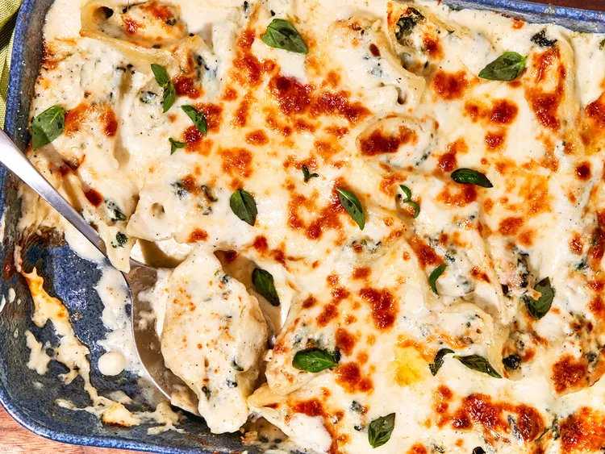

Chicken Spinach Alfredo Baked Stuffed Shells
The Recipe
These chicken Alfredo baked stuffed shells are made with rotisserie chicken and prepared Alfredo sauce for ease. Assemble a few ingredients for a comfort food casserole with an elevated edge.
Ingredients
- 1 pound jumbo pasta shells
- 2 tbsp kosher salt, divided
- 2 cups shredded rotisserie chicken
- 1 1/4 cups ricotta cheese
- 1/4 cup chopped fresh basil
- 10 oz frozen chopped spinach, thawed and well drained
- 1 cup grated parmesan cheese, divided
- 3/4 tsp freshly ground black pepper, divided
- 1/2 tsp garlic powder
- 1 large egg, beaten
- 1 tbsp olive oil
- 22 to 24 oz prepared alfredo sauce
- 2 cups shredded mozzarella cheese
Steps
- Bring a large pot of water to a boil. Add 4 1/2 teaspoons salt and pasta shells to water and boil, stirring occasionally, 9 minutes, Drain and set aside.
- Preheat the oven to 375 degrees F (190 degrees C). Combine chicken, ricotta, basil, spinach, 3/4 cup grated Parmesan cheese, 1/2 teaspoon pepper, garlic powder and remaining salt in a large bowl and mix well. Stir in egg. Divide filling evenly among pasta shells.
- Coat bottom of a 9x13-inch casserole dish with olive oil. Spread 1/2 cup Alfredo sauce along bottom of dish. Fill dish with stuffed shells and top with remaining sauce, shredded cheese and remaining Parmesan and pepper. Cover with foil.
- Bake in the preheated oven for 25 minutes. Uncover and bake until bubbly, 10 to 15 minutes more.
- Turn the oven to broil on High. Broil until lightly browned on top, 3 to 4 minutes. Let stand for 5 to 10 minutes before serving.
Stolen from Allrecipes.com